RiiConnect24
Dacă ai nevoie de ajutor pentru orice legat de acest tutorial, te rugăm să te alături serverului de discord RiiConnect24 (recomandat) sau scrie-ne un e-mail la [email protected].
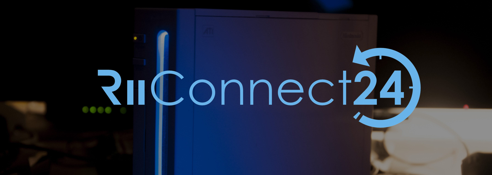
Riiconnect24 îți permite să folosești servicii întrerupte de la WiiConnect24, care includ News, Forecast, Everybody Votes, Nintendo și Mii Contest Channel, împreună cu Wii Mail.
Acest ghid este numai pentru consolele Wii clasice.
- Urmează acest tutorial dacă vrei să instalezi RiiConnect24 pe un vWii (modul Wii pe Wii U).
- Urmează acest tutorial dacă vrei să instalezi RiiConnect24 pe Emulatorul Dolphin.
NU INSTALA RIICONNECT24 PE UN WII MINI! Nu va funcționa și îți va brick-ui consola.
De ce ai nevoie
- Un card SD sau o unitate USB
- Un Wii cu o conexiune la Internet
- Un calculator
- RiiConnect24 Patcher (Windows, Mac și Linux)
Instrucțiuni
Secțiunea I - Folosirea RiiConnect24 Patcher
Dacă nu poți rula RiiConnect24 Patcher, te rugăm să te alături serverului de Discord RiiConnect24 (recomandat) sau scrie-ne un e-mail la [email protected] pentru ajutor suplimentar.
- Apasă pe link-ul de mai sus pentru a merge la pagina GitHub unde se afla patcher-ul.
- Descarcă
RiiConnect24Patcher.batdacă ești pe Windows, șiRiiConnect24Patcher.shdacă ești pe un sistem Unix - Pe Windows rulează
RiiConnect24Patcher.bat. Pe sistemele Unix, deschide Terminalul și scriebash, apoi trageRiiConnect24Patcher.shîn terminal și apoi apasă enter. Ar trebui să arate așa:bash RiiConnect24Patcher.sh. - Apasă 1 pentru a alege “
Start” și confirmă-ți selecția apăsândENTER. (NOTĂ: Aceste capturi de ecran sunt din versiunea de Windows a patcher-ului.) 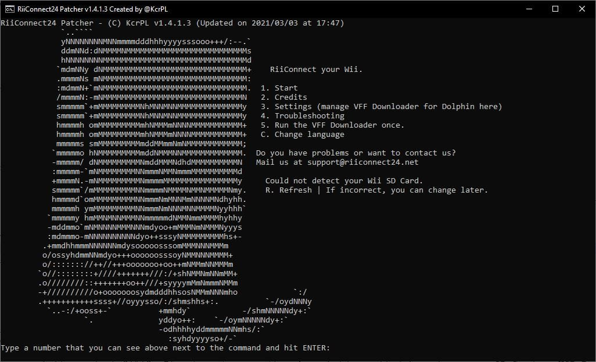 - Selectează dispozitivul pentru care patch-uiți. 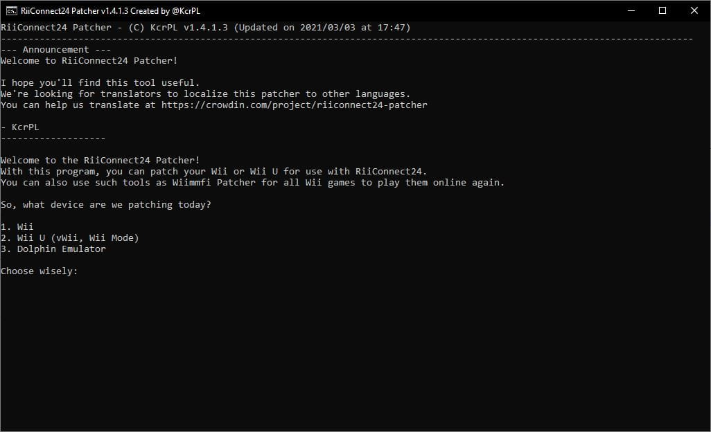
- Pentru acest ghid, alege “
Install RiiConnect24 on your Wii” 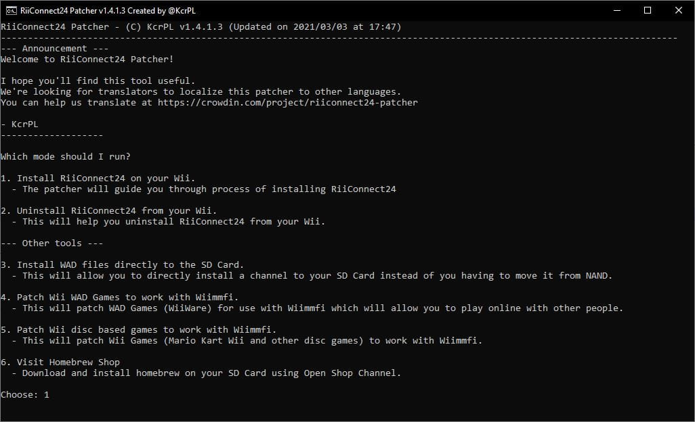 - Alege “
Express (Recommended)”. Îți va oferi tot ce îți trebuie. 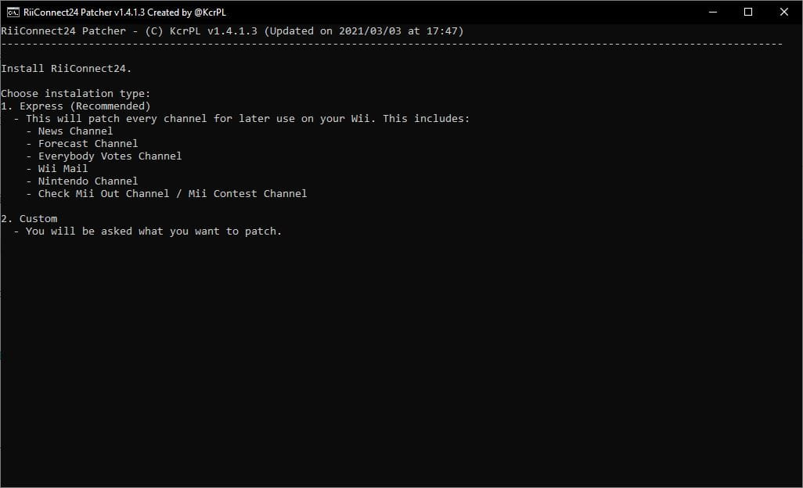 - Selectează-ți regiunea. 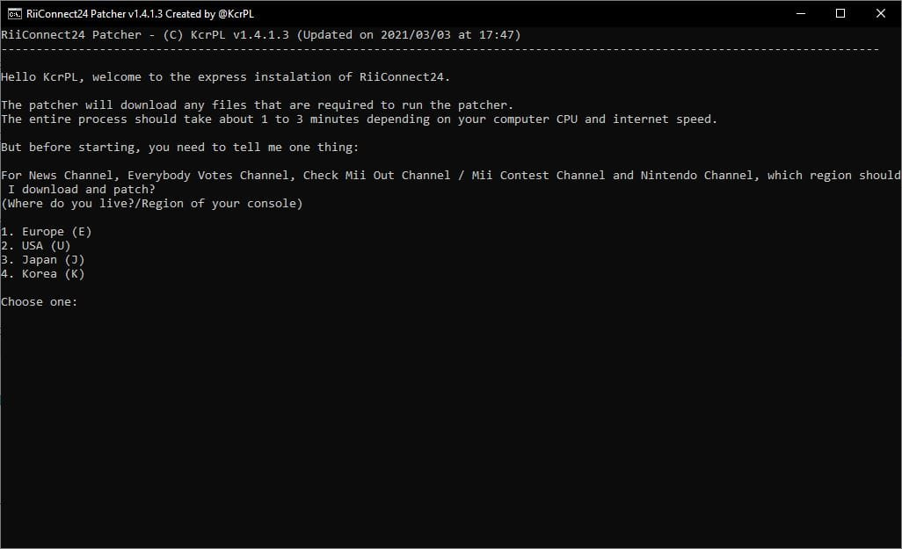
- Dacă tot ești aici, RiiConnect24 Patcher poate descărca adițional alte canale opționale care nu folosesc RiiConnect24.
[X]reprezintă opțiunile selectate. Doar apasă 5 șiENTERdacă nu ești interesat. 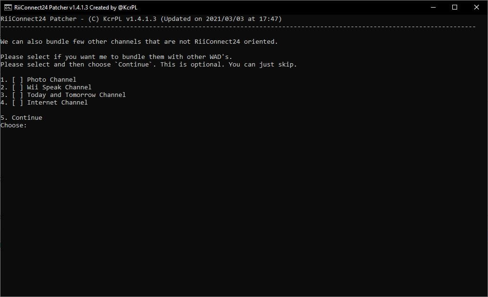 - Conectează Cardul tău SD sau Unitatea ta USB în calculatorul tău și selectează “
1”. 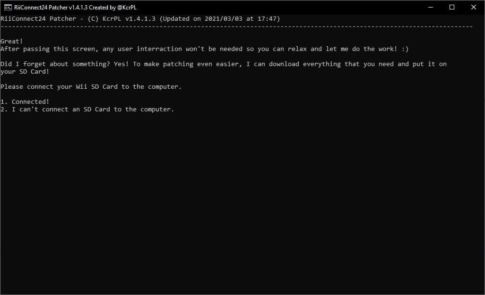 - Dacă dispozitivul tău a fost detectat cu succes, selectează “
1”. Dacă nu, asigură-te că există un dosar numitappspe Cardul tău SD sau Unitatea ta USB și mai încearcă odată. 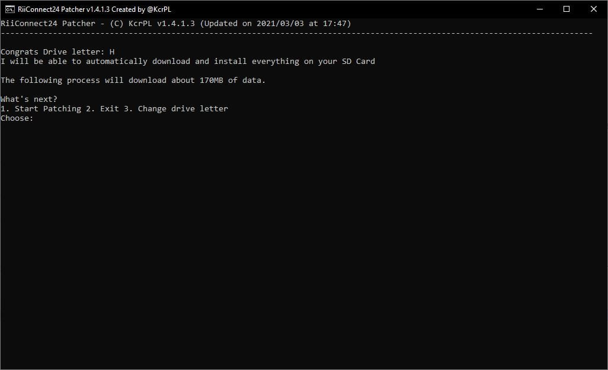 - Așteaptă… 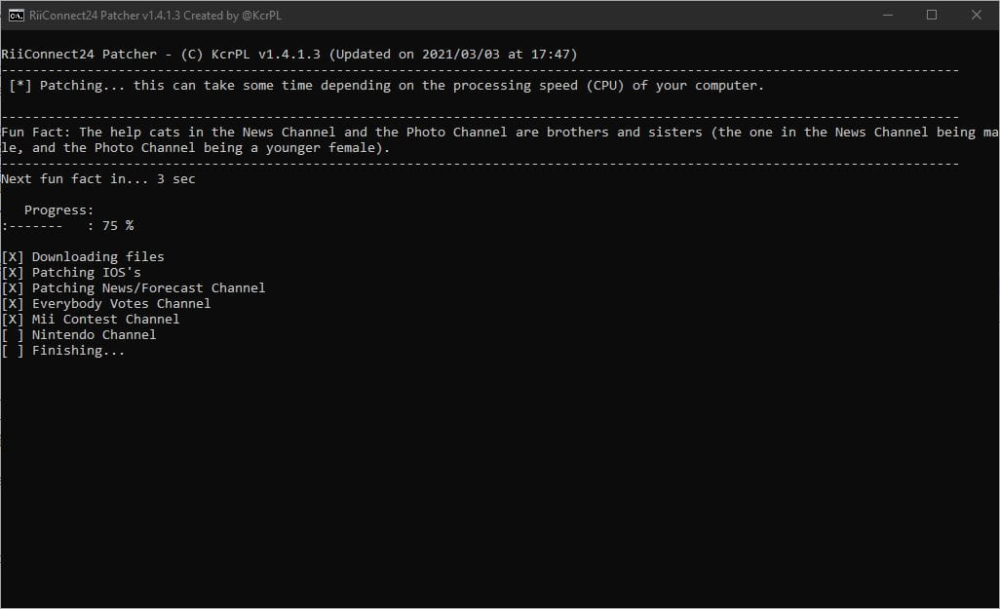
- După ce este gata, am aprecia dacă poți lua un minut să trimiți feedback anonim înapoi la noi. Dacă nu vrei, închide patcher-ul. Toate fișierele ar trebui să fie deja în Cardul tău SD. 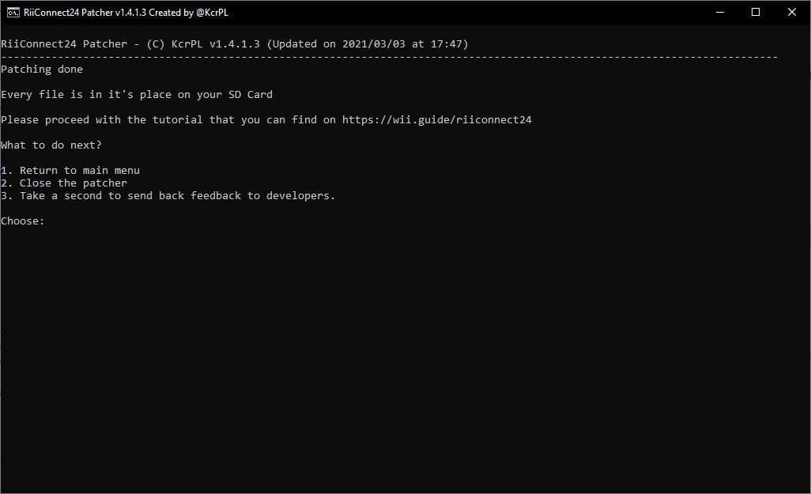 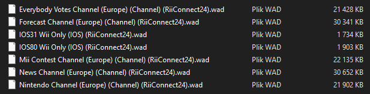
- Dacă nu a copiat tot automat în Cardul tău SD sau Unitatea ta USB, copiază dosarele
WADșiappsde lângăRiiConnect24Patcher.batîn Cardul tău SD sau Unitatea ta USB.
Secțiunea II - Instalarea WAD-urilor
Acum vei instala IOS-urile modificate și WAD-urile de Canale care sunt necesare pentru a utiliza RiiConnect24.
- Introdu cardul tău SD sau unitatea ta USB în Wii.
- Pornește Homebrew Channel pe Wii.
- Lansează Wii Mod Lite.
- Folosind +Control Pad-ul pe Wii Remote-ul tău, navighează la
WAD Manager, apoi du-te la dosarulwad. - Evidențiază toate WAD-urile din dosar apăsând Butonul + pentru a le selecta. Când toate WAD-urile sunt evidențiate, apasă A de două ori pentru a instala WAD-urile.
- Dacă primești o eroare spunând că un titlu cu o versiune mai mare este deja instalat (eroare -1035), du-te înapoi la meniul de selecție a WAD-urilor și apasă Butonul - pe WAD-ul evidențiat pentru a-l dezinstala, apoi încearcă să-l instalezi din nou.
- După ce au fost instalate cu succes, apasă Butonul HOME pentru a ieși înapoi la Homebrew Channel.
Secțiunea III – Modificarea nwc24msg.cfg
Acum vei modifica fișierul nwc24msg.cfg care este necesar pentru a folosi Wii Mail.
- Lansează RiiConnect24 Mail Patcher.
- Ar trebui să dureze numai câteva secunde ca să-ți modifice fișierul nwc24msg.cfg. Când este gata, apasă Butonul HOME pentru a ieși.
Dacă nu ai putut să îți modifici fișierul nwc24msg.cfg corect, te rugăm să te alături serverului de Discord RiiConnect24 (recomandat) sau scrie-ne un e-mail la [email protected] pentru ajutor suplimentar.
Secțiunea IV - Conectarea
Începând cu 16 Iunie 2022, DNS-ul RiiConnect24 se va schimba. Citește mai mult: aici.
Acum îți vei seta DNS-ul la serverele noastre. Acest lucru este opțional dar recomandat, pentru că îți îmbunătățește folosirea RiiConnect24 și Wiimmfi prin activarea unor funcții.
- Mergi la
Wii Options. - Du-te la
Wii Settings. - Du-te la
Page 2, apoi apasă peInternet. - Du-te la
Conenction Settings. - Selectează-ți conexiunea actuală.
- Du-te la
Change Settings. - Du-te la
Auto-Obtain DNS(Nu IP Address), apoi alegeNo, apoiAdvanced Settings. - Scrie
167.86.108.126ca DNS-ul primar. - Scrie
1.1.1.1ca DNS-ul secundar. - Selectează
Confirm, apoi alegeSave. - Apasă
OKpentru a efectua un test de conexiune. - Dacă testul de conexiune a reușit, alege
Nopentru a sări peste Actualizarea de Sistem Wii. - Du-te la
WiiConnect24, apoiWiiConnect24din nou, și asigură-te că este activat. - Înapoi în meniul WiiConnect24, mergi la
Standby Connectionși asigură-te că este activat. - La
Slot Illumination, recomandăm să setezi lumina de disc laDimsauBright, dar asta este opțional. - În final, mergi la secțiunea
Internet, apoiUser AgreementssauAgreement/Contact, apoiYes. Te rugăm citește prin asta.
It’s common to get error FORE000006 on the Forecast Channel after installing RiiConnect24. If you get it, make sure your Wii’s to the correct date and time, then wait no more than an hour and it may start working. [If you still get error FORE000006 or if you get NEWS000006, you will need to delete your SYSCONF with RC24-Clear-Tool].
You will get error 268503 when loading the Nintendo Channel. This is normal. You can bypass the error by pressing OK.
If you get error 107245, then you have not installed the patched IOS. Make sure you install IOS31 and IOS80 with Wii Mod Lite, along with any other patched WADs.
If you get error 107304 or you see Nintendo’s User Agreement without RiiConnect24’s logo, that means your ISP (Internet Service Provider) or network is blocking the use of a DNS. You can set Auto-Obtain DNS to On to solve this. RiiConnect24 will still work without it. Or, you can use our DNS-Server program.
If you’re getting errors such as WiiConnect24 and Wii Shop Channel currently not being offered in your country, go to Wii Settings -> Last Page -> Country and change it to United Kingdom. You will get this error when using a country that we don’t support. Contact us at [email protected] if you need more help.
Continuă la Wiimmfi
Wiimmfi îți permite să joci jocuri online după întreruperea Conexiunii Nintendo Wi-Fi. Acesta este opțional de instalat.
Continue to WiiLink
WiiLink lets you use the Japanese-exclusive channels known as Wii no Ma and Digicam Print Channel. Acesta este opțional de instalat.
Continuă la navigarea site-ului
Avem multe alte tutoriale care s-ar putea să-ți placă.